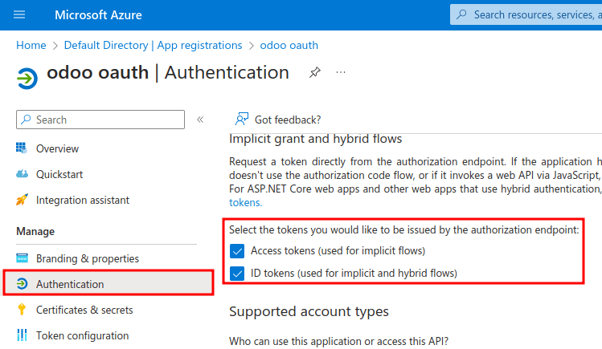

Autenticación de inicio de sesión de Microsoft Azure¶
La autenticación de inicio de sesión de Microsoft OAuth con Azure es una función útil que permite que los usuarios de Odoo inicien sesión con su cuenta de Microsoft Azure en su base de datos.
Esto es muy útil, en especial si la empresa usa un área de trabajo de Azure y quiere que los empleados se conecten a Odoo con su cuenta de Microsoft.
Advertencia
Las bases de datos que estén alojadas en Odoo.com no pueden iniciar sesión con OAuth si el usuario es el dueño o administrador de la base de datos; si esto ocurre, la base de datos se desvinculará de su cuenta de Odoo.com. Si configura OAuth para ese usuario, ya no podrá duplicar, cambiar el nombre, o gestionar esa base de datos desde el portal de Odoo.com.
Configuración¶
Para poder integrar la función de inicio de sesión de Microsoft es necesario realizar la configuración entre Microsoft y Odoo.
Parámetros del sistema de Odoo¶
Primero active el modo desarrollador y después vaya a .
Haga clic en Nuevo y en el formulario en blanco agregue el parámetro auth_oauth.authorization_header como Clave y ponga to 1 como Valor. Después los cambios se guardarán de forma automática, pero también puede dar clic en el icono con forma de nube para guardarlos de forma manual.
Tablero de Microsoft Azure¶
Crear una nueva aplicación¶
Ya que configuró los parámetros de sistema desde Odoo, ahora debe crear una aplicación correspondiente dentro de Microsoft Azure. Para crear una nueva aplicación, vaya al portal de Microsoft Azure. Inicie sesión con la cuenta de la empresa de Microsoft Outlook Office 365, si no tiene una, inicie sesión con su cuenta de Microsoft personal.
Importante
Para poder realizar los pasos de configuración a continuación es necesario iniciar sesión con un usuario que tenga acceso de administrador a los ajustes de Azure.
Luego, vaya a la sección con el nombre :guilabel:`Gestionar Microsoft Entra ID ` (antes conocido como Azure Active Directory). Por lo general, la ubicación de este enlace se encuentra en el centro de la página.
Haga clic en el icono Add (+) (Agregar) que se encuentra en el menú superior y después seleccione App registration (registro de aplicación) del menú desplegable. En la pantalla Register an application (registrar una aplicación) cambie el campo Name (nombre) a Inicio de sesión Odoo en OAuth u otro título que pueda reconocer. En la sección Supported account types (tipos de cuenta compatibles) seleccione la opción Accounts in this organizational directory only (Default Directory only - Single tenant) (Solo las cuentas de este directorio organizativo (solo el directorio predeterminado: inquilino único)).
Advertencia
Los Supported account types (tipos de cuentas compatibles) dependen del tipo de cuenta de Microsoft y el uso que se le quiere dar a OAuth. Por ejemplo, ¿el inicio de sesión es para usuarios dentro de una organización o para darle acceso de portal al cliente? La configuración de arriba es para usuarios dentro de una organización.
Si la audiencia será usuarios del portal, elija Personal Microsoft accounts only (solo cuentas personales de Microsoft). Si la audiencia será usuarios de la empresa, elija Accounts in this organizational directory only (Default Directory only - Single tenant) (Solo las cuentas de este directorio organizativo (solo el directorio predeterminado: inquilino único)).
En la sección Redirect URL (URL de redirección), seleccione Web como la plataforma y después ingrese https://<odoo base url>/auth_oauth/signin en el campo URL. La URL base de Odoo es el elemento canonical en el campo URL por el cual se puede llegar a su instancia de Odoo (por ejemplo, mibasededatos.odoo.com si está alojado en Odoo.com). Después, haga clic en Registrar para crear la aplicación.
Autentificación¶
Para editar la autenticación de la nueva aplicación haga clic en Authentication (autenticación) que se encuentra en el menú de la izquierda. Haga esto después de que se le haya redirigido a los ajustes de la aplicación después del paso previo.
A continuación, deberá elegir qué tipo de tokens son necesarios para la autenticación OAuth. Estos tokens no son monetarios, sino tokens de autenticación que se transfieren entre Microsoft y Odoo. Estos tokens no tienen costo, solo se usan para propósitos de autenticación entre dos API. Vaya hasta la parte inferior de la pantalla y marque las casillas que digan Access tokens (used for implicit flows) (Tokens de acceso (para flujos implícitos)) y ID tokens (used for implicit and hybrid flows) (Tokens de ID (para flujos híbridos e implícitos)) para seleccionar los tokens que debe proporcionar el punto de conexión.
Haga clic en Guardar para asegurar que sus cambios se guardaron
Obtener las credenciales¶
Ya que se creó y autenticó la aplicación en la consola de Microsoft Azure, ahora necesitamos obtener las credenciales. Para hacerlo, haga clic en la opción Overview (vista general) que se encuentra en la columna de la derecha. Seleccione y copie el Application (client) ID (identificador de aplicación [cliente]) en la ventana que aparece. Pegue esta credencial en el portapapeles o un bloc de notas, ya que usaremos esta credencial en Odoo más adelante.
Después de finalizar este paso, haga clic en Endpoints en la parte superior del menú y haga clic en el icono de copiar junto al campo Autorización del endpoint OAuth 2.0 (v2). Pegue este valor en el bloc de notas.
Configuración en Odoo¶
Por último, debe configurar algunos ajustes de OAuth para Microsoft Azure en Odoo. Vaya a y seleccione la casilla para activar la función de inicio de sesión de OAuth. Haga clic en Guardar para asegurarse de que sus cambios se guardaron y luego inicie sesión en la base de datos una vez que la pantalla de inicio de sesión cargue.
Una vez más, vaya a y haga clic en Proveedores OAuth. Ahora, seleccione Nuevo en la parte superior izquierda y escriba el nombre del proveedor como Azure.
Pegue el ID de aplicación (cliente) de la sección anterior en el campo ID del cliente. Después de completar esto, pegue el nuevo valor Autenticación de endpoint OAuth 2.0 (v2) en el campo URL de autorización.
Para el campo URL información del usuario, pegue la siguiente URL: https://graph.microsoft.com/oidc/userinfo
En el campo Enfoque, pegue el siguiente valor:openid profile email. Luego, el logo de Windows se puede usar como la clase CSS en la pantalla de inicio de sesión ingresando el siguiente valor: fa fa-fw fa-windows, en el campo Clase CSS.
Seleccione la casilla junto al campo Permitido para habilitar el proveedor OAuth. Finalmente, agregue Microsoft Azure al campo Etiqueta del botón de inicio de sesión. Este texto aparecerá junto al logo de Windows en la página de inicio de sesión.
Haga clic en Guardar para guardar los cambios y completar la configuración de la autenticación de OAuth en Odoo.
Flujos de experiencia del usuario¶
Para que un usuario inicie sesión en Odoo usando Microsoft Azure, el usuario debe estar en la . Esta es la única manera en la que Odoo se puede vincular a la cuenta de Microsoft Azure e iniciar sesión.
Nota
Los usuarios ya existentes deben restablecer su contraseña para acceder a la . En el caso de los nuevos usuarios de Odoo, deben hacer clic en el enlace de la invitación de nuevo usuario que recibieron por correo electrónico y luego hacer clic en Microsoft Azure. Los usuarios no deben establecer una contraseña nueva.
Para iniciar sesión en Odoo por primera vez usando el proveedor Microsoft Azure OAuth vaya a la (usando el enlace de la invitación de usuario nuevo). Debe aparecer una página para restablecer la contraseña. Luego, haga clic en la opción llamada Microsoft Azure. Esta página lo redirigirá a la página de inicio de sesión de Microsoft.

Escriba el correo electrónico de Microsoft y haga clic en Siguiente. Siga el proceso para iniciar sesión en la cuenta. Si activa la A2F deberá completar un paso adicional.

Finalmente, después de iniciar sesión en su cuenta, la página lo redireccionará a una página de permisos donde se le invita al usuario a Acceptar las condiciones en las que se señala que la aplicación Odoo accederá a su información de Microsoft.